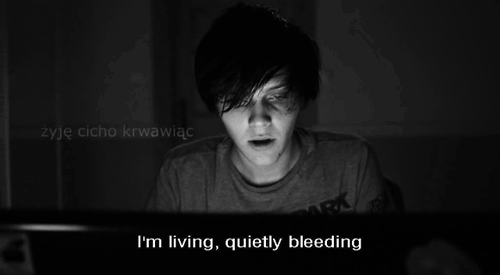

Interests
- During my spare time, I watch movies and/or TV shows.
My favorite movies are Edward Scissorhands and Suicide Room.

- I spend a lot of time on Tumblr
- I like listening to music, specifically music in the punk rock and post-hardcore
genre. The bands that I listen to choose to write their music about
the deep, dark struggles of life,
which I sincerely appreciate. Nowadays, it is
hard to find music that stays away from the topic of lust and other worldly pleasures.
- I spend the majority of my free time on Tumblr.
Let's take a look at my Tumblr!
- I spend time scrolling around Youtube and checking out videos.
I made a playlist for some of my favorite vidoes out there!"
- I like playing my ukelele because it calms me down.
- As an introvert, I enjoy spending time alone to regenerate and
get away from the ciaos on the outside world.